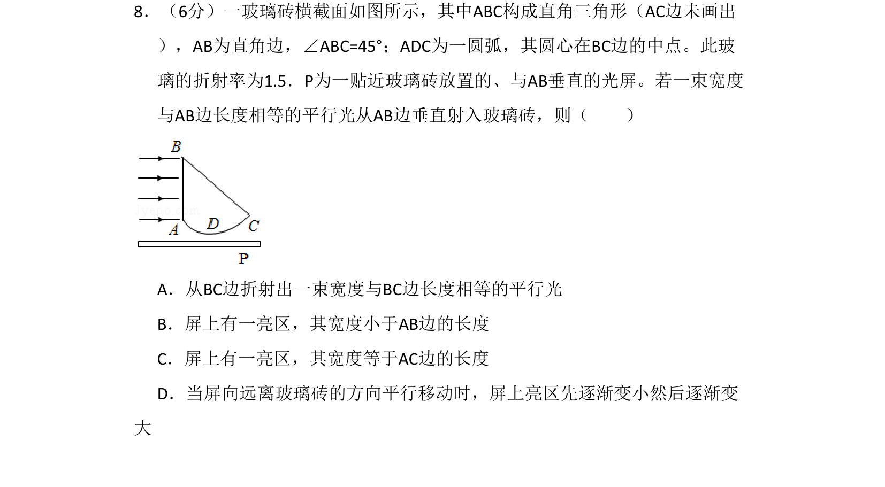
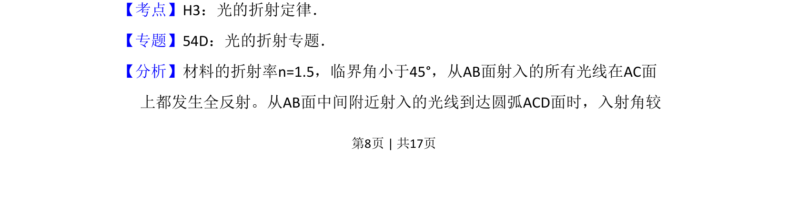
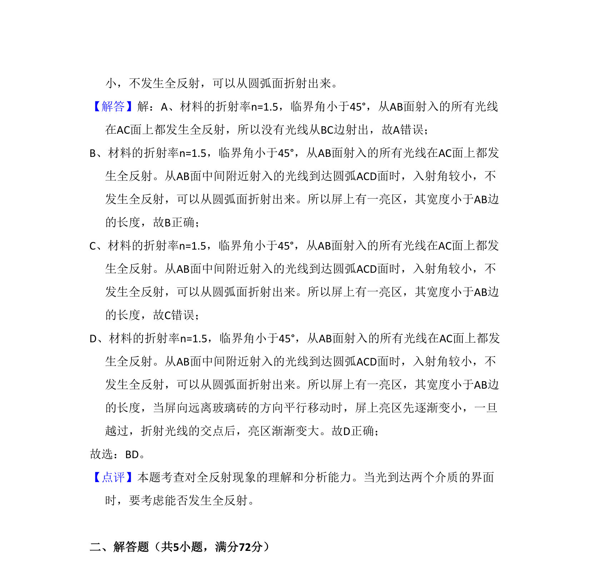

考点：光的折射定律 全反射 临界角
光的折射定律
全反射
临界角

一束平行光垂直射入玻璃砖，经全反射和折射后在屏上形成亮区，分析亮区宽度及移动变化


📄 原 PDF 第 8 页：素材/真题/吉林/2008-2024·（吉林）物理高考真题/2009年高考物理试卷（全国卷Ⅱ）（解析卷）.pdf
素材/真题/吉林/2008-2024·（吉林）物理高考真题/2009年高考物理试卷（全国卷Ⅱ）（解析卷）.pdf